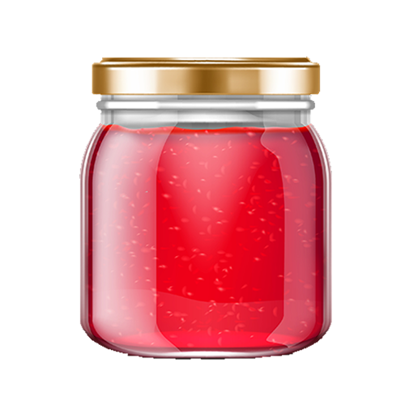

Strawberry Jam
Jam is made from crushed or chopped fruits and sugar. Jam will hold its shape, but it is less firm than jelly. Jams made from a mixture of fruits are usually called conserves, especially when they include citrus fruits, nuts, raisins, or coconut.